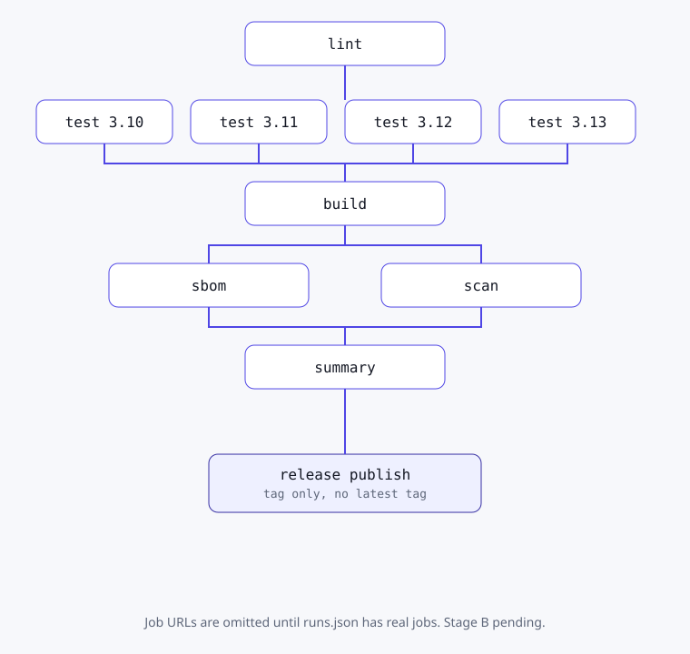

ci.yml
构建时记录：live，（Asia/Shanghai）
GitHub 徽章不可达，显示的是构建时记录
CI/CD · GitHub Actions · Stage B
公开仓库已建立，流水线在 GitHub Actions 上真实运行；公司是虚构的；不部署到任何服务器。页面上的 run 链接来自 GitHub API 的构建时记录，徽章是唯一的外部图片。
The live image URLs use caoyadong888-wq/pipeforge-demo. They are the only external images on this page. The recorded copies below are build-time fallbacks.
构建时记录：live，（Asia/Shanghai）
GitHub 徽章不可达，显示的是构建时记录
构建时记录：live，（Asia/Shanghai）
GitHub 徽章不可达，显示的是构建时记录
lint and the four test cells run first. build needs both. sbom and scan run in parallel after build. summary runs after all of them. publish runs only from release.yml after that same ci workflow succeeds.

The same drawing is pipeline.svg.
Recorded runs: 28. Status live.
| Workflow | Event | Branch | Commit | Conclusion | Duration |
|---|---|---|---|---|---|
| ci.yml | push | main | 2263a41 | success | 164s |
| codeql.yml | push | main | 2263a41 | success | 100s |
| make-ghcr-public.yml | workflow_dispatch | main | 0386901 | failure | 8s |
| codeql.yml | push | main | 0386901 | success | 70s |
| ci.yml | push | main | 0386901 | cancelled | 26s |
| make-ghcr-public.yml | workflow_dispatch | main | da796d5 | failure | 23s |
| codeql.yml | push | main | da796d5 | success | 57s |
| ci.yml | push | main | da796d5 | success | 124s |
| release.yml | push | v0.1.0 | f653c0b | success | 228s |
| ci.yml | push | main | f653c0b | success | 134s |
| codeql.yml | push | main | f653c0b | success | 66s |
| release.yml | push | v0.1.0 | 568d7b3 | failure | 2s |
| codeql.yml | push | main | 568d7b3 | success | 59s |
| ci.yml | push | main | 568d7b3 | success | 151s |
| codeql.yml | pull_request | dependabot/pip/uvicorn-gte-0.30-and-lt-0.55 | 84d667f | success | 58s |
| ci.yml | pull_request | dependabot/pip/uvicorn-gte-0.30-and-lt-0.55 | 84d667f | success | 168s |
| ci.yml | pull_request | demo/intentional-scan-block | 33603f7 | failure (intentional) | 220s |
| codeql.yml | pull_request | demo/intentional-scan-block | 33603f7 | success | 88s |
| codeql.yml | pull_request | demo/intentional-scan-block | b81a239 | cancelled | 4s |
| ci.yml | pull_request | demo/intentional-scan-block | b81a239 | cancelled | 50s |
| ci.yml | pull_request | demo/add-express-service-level | c505198 | success | 191s |
| codeql.yml | pull_request | demo/add-express-service-level | c505198 | success | 65s |
| ci.yml | push | main | b65fc71 | success | 204s |
| codeql.yml | push | main | b65fc71 | success | 58s |
| codeql.yml | pull_request | dependabot/pip/uvicorn-gte-0.30-and-lt-0.55 | 1f9a155 | success | 140s |
| ci.yml | pull_request | dependabot/pip/uvicorn-gte-0.30-and-lt-0.55 | 1f9a155 | failure | 274s |
| ci.yml | pull_request | dependabot/pip/fastapi-gte-0.115-and-lt-0.143 | b63b99e | failure | 270s |
| codeql.yml | pull_request | dependabot/pip/fastapi-gte-0.115-and-lt-0.143 | b63b99e | success | 142s |
Run graph fallback (open a linked run above for the live Actions page):

Runs ruff, mypy, and a sha256-checked actionlint binary with shellcheck beside it.
Pinned tools and a shell-checked run script catch workflow mistakes before the test matrix spends minutes.
Pytest on Python 3.10, 3.11, 3.12, and 3.13. Coverage must stay at or above 90 percent. fail-fast is off.
One Python version can hide a syntax or typing gap. The matrix is the whole supported range, and one red cell does not cancel the others.
Builds the wheel and sdist, then builds the image with push false and load true, and saves image.tar.
CI proves the image builds. It does not publish it. Publish happens only on a version tag, from the archive the scanner already saw.
Syft writes SPDX JSON and CycloneDX JSON for the image, and SPDX JSON for the source tree.
Two image formats cover consumers that accept only one of them. The source SBOM is a separate file.
Trivy scans the image archive at CRITICAL and HIGH, ignores unfixed issues, and fails the job when exit-code is 1. SARIF is uploaded for code scanning.
A scanner that always exits 0 does not gate a release. The failing exit code is the gate.
Writes each job result, the local image id, and the CycloneDX component count into the run summary.
Those values are passed in through environment variables. The run script does not interpolate event fields.
On a v*.*.* tag, pushes the scanned image to GHCR as the version and a short sha, attests the image, wheel, and sdist, and attaches those files plus SHA256SUMS to a GitHub Release.
There is no floating latest tag and no server rollout. The token is GITHUB_TOKEN.
The workflow token starts at contents: read. Only the scan job, CodeQL, and publish raise it, and only for the scope that job uses.
A pull request run does not receive a write token for packages or releases. Checkout sets persist-credentials to false.
Highlighted from snapshot 2263a414fe628107f433d708f83dd82cc29e55a6. Blob links point at the public repository.
Recorded releases: 1. State live. Recorded from the live GitHub Releases / Packages API for the public demo repository.
构建时记录. Recorded at 2026-10-07T08:30:30+08:00. Stage B. Owner status set. Image build not-run-locally. The box has no Docker, so this checkout does not claim an image was built here.
Errors 0. Result pass. shellcheck 0.11.0 is on PATH for the run: scripts.
High 0. Medium 0. Informational 1. Result pass.
superfluous-actions /workspace/pipeforge-demo/.github/workflows/release.ymlErrors 0. Result pass.
Errors 0. Result pass.
Passed 35. Failed 0. Coverage 98.7 percent. Result pass.
Passed 15. Failed 0. Result pass.
test_checkout_drops_credentialstest_dependabot_covers_actions_pip_and_docker_weeklytest_jobs_have_timeoutstest_no_pull_request_targettest_only_github_token_secret_is_referencedtest_public_readme_does_not_link_to_the_portfolio_hosttest_python_matrix_is_exactly_3_10_through_3_13test_release_does_not_push_latesttest_run_scripts_do_not_interpolate_event_contexttest_scan_fails_on_critical_and_hightest_snapshot_manifest_tracks_maintest_top_level_permissions_are_contents_readtest_uses_are_full_shastest_workflows_have_no_deploy_channeltest_write_permissions_stay_on_the_whitelist